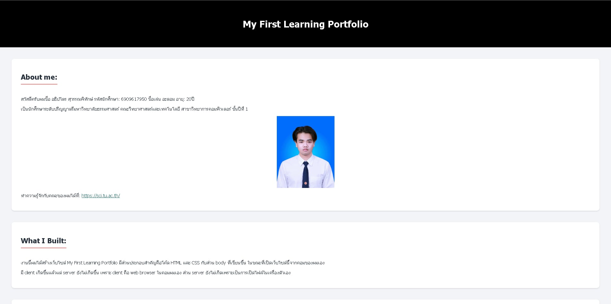
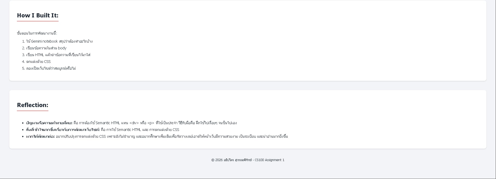

About Me:
นายอธิปไตร สุวรรณพิทักษ์ (อะตอม)
- รหัสนักศึกษา: 6909617950
- หลักสูตร: วิทยาศาสตรบัณฑิต สาขาวิชาวิทยาการคอมพิวเตอร์ (ชั้นปีที่ 1)
- คณะ: วิทยาศาสตร์และเทคโนโลยี มหาวิทยาลัยธรรมศาสตร์
- ข้อมูลคณะ: https://sci.tu.ac.th/
ความสนใจ (Interests):
Software Engineering
Game Development
Gaming
My Portfolio
Course Assignment
30 Aug 2026
CS100 A1: My First Learning Portfolio
Role: Individual Developer
พัฒนาเว็บไซต์ Learning Portfolio หน้าเดียวด้วย HTML และ CSS เพื่อแนะนำตัวเองและสะท้อนกระบวนการเรียนรู้เบื้องต้น
Skills:
HTML
CSS
Semantic HTML
Reflection:
- What I did: พัฒนาเว็บไซต์ My First Learning Portfolio หน้าเดียวด้วยโครงสร้าง Semantic HTML และจัดแต่งความสวยงามด้วย CSS
- What I learned: เริ่มเข้าใจโครงสร้าง Semantic HTML และการทำงานร่วมกันระหว่าง HTML และ CSS ในการจัดหน้าเว็บ รวมถึงการแสดงผลผ่าน Browser
- Challenge: ช่วงแรกเจอปัญหาเรื่องการใช้ Semantic HTML แทน <div> หรือ <p> และเรื่อง path ของรูปภาพ แต่ทดลองปรับแก้ทีละส่วนจนเข้าใจและถูกต้อง
- Next step: อยากฝึกฝนการใช้ CSS เพิ่มเติมเพื่อจัดวางเลย์เอาต์ให้สวยงาม เป็นระเบียบ และสามารถรองรับการแสดงผลบนมือถือได้ดียิ่งขึ้น
Evidence:


Course Assignment
18 September 2026
CS102 Hw2: C Programming Problem Solving
Role: Independent Developer
ทำการบ้านวิชา CS102 เกี่ยวกับการเขียนโปรแกรมด้วยภาษา C เพื่อแก้ปัญหาโจทย์การคำนวณและตรรกะจำนวน 5 ข้อ
Skills:
C
Problem Solving
Algorithms
Logic
Reflection:
- What I did: เขียนโปรแกรมภาษา C จำนวน 5 ข้อ เช่น การคำนวณช่วงความสูง การจำแนกประเภทสามเหลี่ยม การแปลงหน่วยเวลา การหาตัวเลขที่หารด้วย 13 ลงตัว และการตรวจสอบจำนวนเฉพาะ
- What I learned: ได้เรียนรู้และเข้าใจไวยากรณ์พื้นฐานภาษา C การรับส่งข้อมูลผ่าน standard I/O (printf/scanf) ตรรกะเงื่อนไข (if-else) และการวนรอบ (loop)
- Challenge: ปัญหาสำคัญคือการจัดการเงื่อนไขขอบเขตข้อมูล (Input Validation/Edge Cases) และการเขียนเงื่อนไขใน Loop ให้ถูกต้อง วิธีรับมือคือออกแบบขั้นตอนและทดสอบรันด้วย Test Cases หลากหลายแบบ
- Next step: อยากศึกษาเพิ่มเติมเรื่อง Functions, Arrays และ Pointer ในภาษา C เพื่อพัฒนาโปรแกรมที่มีโครงสร้างชัดเจนและมีประสิทธิภาพยิ่งขึ้น
Evidence:
GitHub Repository: https://github.com/athippatai/CS102.git